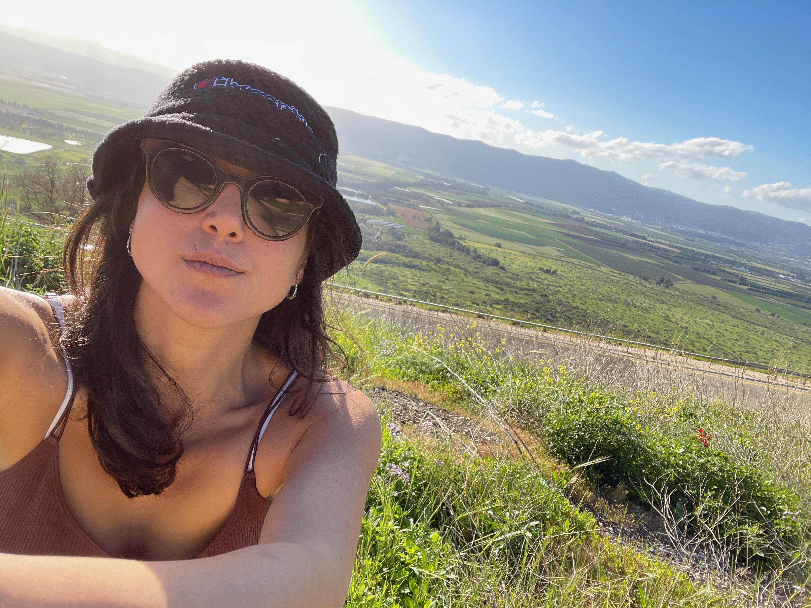
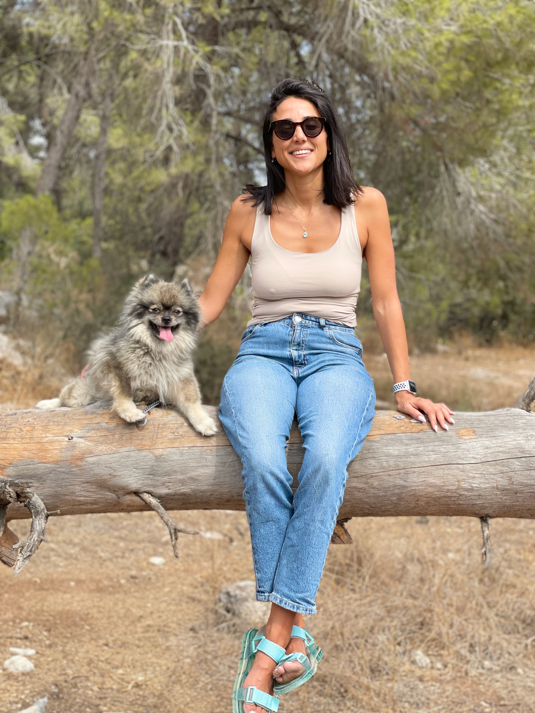
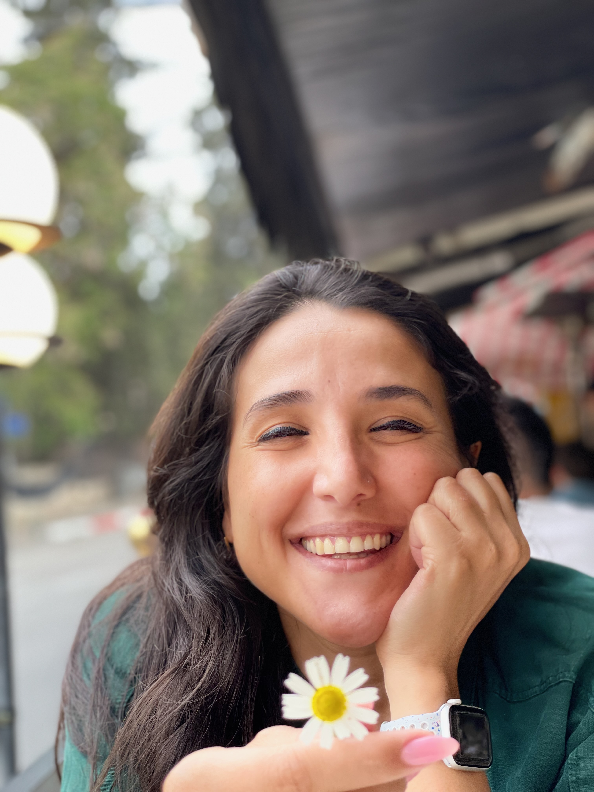

פסיכותרפיסטית הוליסטית
מרחב בטוח לריפוי, לצמיחה ולחיים שלמים יותר
אני מאמינה שכל אדם נושא בתוכו
את הכוח לרפא את עצמו —
לפעמים הוא פשוט צריך מישהי לצדו.

שמי דניאלה לוין, ואני פסיכותרפיסטית הוליסטית עם ניסיון של מעל עשר שנים בליווי אנשים דרך תהליכים טיפוליים עמוקים. הדרך שלי לתחום הטיפול התחילה מתוך חיפוש אישי — תוך הבנה שריפוי אמיתי חייב לכלול את הגוף, הנפש והרוח יחד.
הגישה ההוליסטית מביטה על האדם כשלם — לא רק על הסימפטום, אלא על השורש. בעבודה שלי אני משלבת כלים מהפסיכותרפיה הקלאסית עם טכניקות גוף-נפש, עבודה אנרגטית ואבחון ציורים ייחודי שפיתחתי לאורך שנות עבודתי.
כל מטופל שנכנס אליי לחדר מביא איתו עולם שלם. הזכות להיות עדה לתהליך השחרור וההתחדשות של אנשים — זה מה שמעיר אותי בבוקר ומזכיר לי למה בחרתי בדרך הזו.
הגוף זוכר מה שהמוח מנסה לשכוח. אני עובדת עם המודעות הגופנית כדרך לשחרר מתחים, טראומות ודפוסים שנתקעו בתא.
הבנה של דפוסים רגשיים, אמונות מגבילות ומנגנוני הגנה — יחד עם פיתוח כלים לחיים רגשיים בריאים ומאוזנים יותר.
חיבור למשמעות, לערכים ולאני העמוק ביותר שלנו. הממד הרוחני לא חייב להיות דתי — הוא פשוט מה שמרגיש אמיתי עבורך.

"הריפוי לא מתחיל כשמשהו נגמר —— דניאלה לוין
הוא מתחיל כשאנחנו מתחילים להקשיב לעצמנו."
הידע שאני מביאה לחדר הטיפולים נבנה לאורך שנים רבות של לימוד, התמחות ועבודה קלינית — תמיד מתוך גישה פתוחה ומתפתחת.
אוניברסיטת תל אביב — התמחות בפסיכולוגיה קלינית
הכשרה מקיפה בגישה גוף-נפש-רוח, בית הספר להילינג
שיטת EMDR וגישות סומאטיות לעיבוד טראומה
שנות מחקר ופיתוח של כלי אבחוני ייחודי דרך שפה חזותית
מאות מטופלים, הרצאות, סדנאות ופודקאסט שבועי